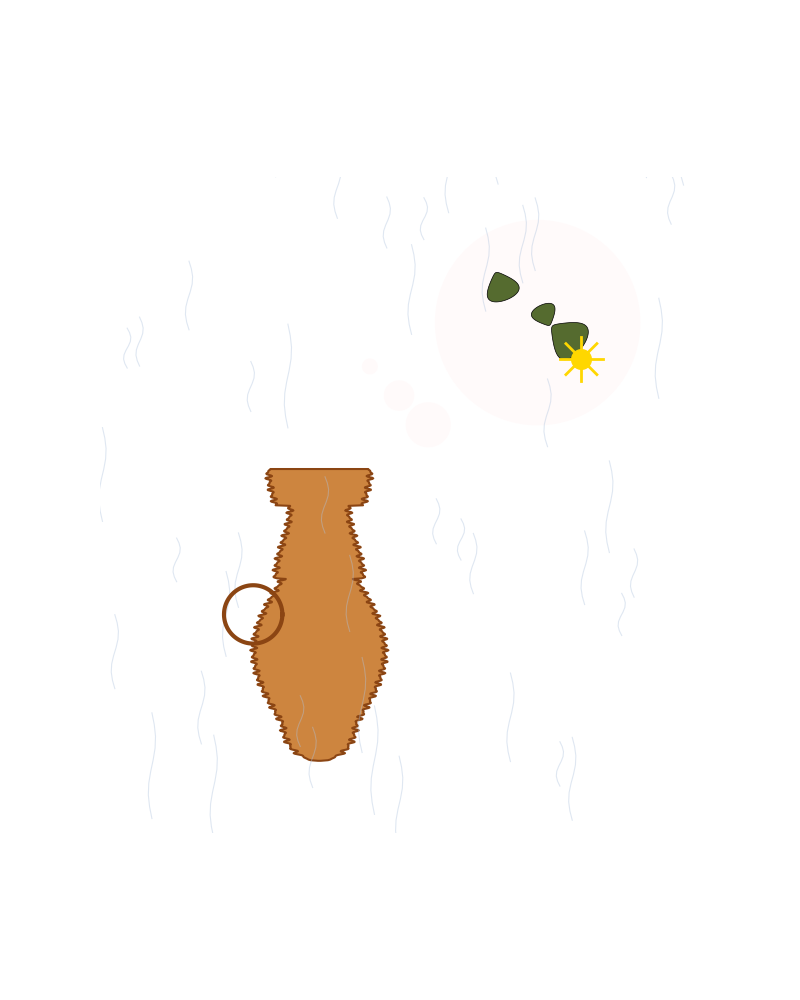

En rusten kaffekanne står ensom i regnet, drømmer om bønner og solskinn i tegnet.

import matplotlib.pyplot as plt
import numpy as np
# Definer output-sti
output_path = "dikt_visualisering.png"
# Opprett figur
fig, ax = plt.subplots(figsize=(8, 10))
ax.set_aspect('equal')
ax.axis('off')
# Farger
bg_color = '#2F4F4F' # Mørk gråblå (regn)
pot_color = '#CD853F' # Rustfarget
rust_dark = '#8B4513'
rain_color = '#B0C4DE'
bean_color = '#556B2F'
sun_color = '#FFD700'
dream_color = '#FFFAFA'
ax.set_facecolor(bg_color)
# --- 1. Regnet (Ensom i regnet) ---
# Visualisering: Vertikale linjer med støy (vind)
np.random.seed(42)
x_vals = np.linspace(-5, 5, 60)
for x in x_vals:
y_start = np.random.uniform(0, 10)
y_end = y_start - np.random.uniform(0.5, 1.5)
# Liten sinus-krøll for vindeffekt
x_line = np.linspace(x, x, 10) + 0.05 * np.sin(np.linspace(0, 2*np.pi, 10))
y_line = np.linspace(y_start, y_end, 10)
ax.plot(x_line, y_line, color=rain_color, alpha=0.4, lw=0.8)
# --- 2. Kaffekannen (En rusten kaffekanne) ---
# Visualisering: En 2D-flate definert av en radius-funksjon r(y) med rust-tekstur
y = np.linspace(0, 4, 500)
# Formfunksjon: Base (halvsirkel) -> Krop (utvidelse) -> Hals (smalere) -> Lokk
def pot_radius_profile(y_val):
# Base (0 til 0.5) - Halvsirkel
if y_val < 0.5:
return np.sqrt(0.25 - (y_val - 0.5)**2)
# Krop (0.5 til 2.5) - Kurvform
elif y_val < 2.5:
return 0.5 + 0.4 * np.sin(np.pi * (y_val - 0.5) / 2.0)
# Hals (2.5 til 3.5) - Smalere
elif y_val < 3.5:
return 0.5 + 0.1 * np.cos(np.pi * (y_val - 2.5))
# Lokk/Top (3.5 til 4.0)
else:
return 0.6 + 0.1 * np.sin(np.pi * (y_val - 3.5))
# Vektorisert beregning av formen
r_shape = np.array([pot_radius_profile(val) for val in y])
# Legg til rust-textur (høyfrekvent støy)
rust_noise = 0.03 * np.sin(y * 80) + 0.02 * np.cos(y * 120)
r_total = r_shape + rust_noise
# Tegn kannen (fyll mellom -x og x)
ax.fill_betweenx(y, -r_total, r_total, color=pot_color, ec=rust_dark, lw=1.5)
# Hank (Sirkel)
theta_h = np.linspace(0, 2*np.pi, 100)
h_x = -0.9
h_y = 2.0
h_r = 0.4
ax.plot(h_x + h_r * np.cos(theta_h), h_y + h_r * np.sin(theta_h), color=rust_dark, lw=3)
# --- 3. Drømmen (Drømmer om bønner og solskinn) ---
# Visualisering: Tankeboble med matematiske figurer
dream_cx, dream_cy = 3.0, 6.0
theta = np.linspace(0, 2*np.pi, 100)
# Tankeboble (Sammensatte sirkler)
# Hovedboble
ax.fill(dream_cx + 1.4*np.cos(theta), dream_cy + 1.4*np.sin(theta), color=dream_color, alpha=0.9)
# Små bobler som kobler til kannen
for i, r in enumerate([0.3, 0.2, 0.1]):
offset = 1.5 + i*0.4
ax.fill(dream_cx - offset + r*np.cos(theta), (dream_cy-1.4) + i*0.4 + r*np.sin(theta), color=dream_color, alpha=0.9)
# --- 4. Bønner (Drømmer om bønner) ---
# Visualisering: Parametrisk kidney-form
# x = cos(t), y = sin(t) + 0.3*sin(2t)
t = np.linspace(0, 2*np.pi, 100)
bean_base_x = np.cos(t)
bean_base_y = np.sin(t) + 0.3 * np.sin(2*t)
# Plasser bønner i boblen
beans = [(dream_cx-0.5, dream_cy+0.5, 0.2), (dream_cx+0.4, dream_cy-0.2, 0.25), (dream_cx+0.1, dream_cy+0.1, 0.15)]
for bx, by, scale in beans:
rot = np.random.uniform(0, 2*np.pi)
x_rot = bean_base_x * np.cos(rot) - bean_base_y * np.sin(rot)
y_rot = bean_base_x * np.sin(rot) + bean_base_y * np.cos(rot)
ax.fill(bx + scale*x_rot, by + scale*y_rot, color=bean_color, ec='black', lw=0.5)
# --- 5. Solskinn (Solskinn i tegnet) ---
# Visualisering: Sirkel med stråler (linjer)
sun_x, sun_y = dream_cx + 0.6, dream_cy - 0.5
ax.scatter(sun_x, sun_y, s=200, color=sun_color)
# Stråler
for angle in np.linspace(0, 2*np.pi, 8, endpoint=False):
dx = 0.3 * np.cos(angle)
dy = 0.3 * np.sin(angle)
ax.plot([sun_x, sun_x + dx], [sun_y, sun_y + dy], color=sun_color, lw=2)
# Juster akser
ax.set_xlim(-3, 5.5)
ax.set_ylim(-1, 8)
plt.savefig(output_path)execution_ok=True fallback_used=False image_ok=True